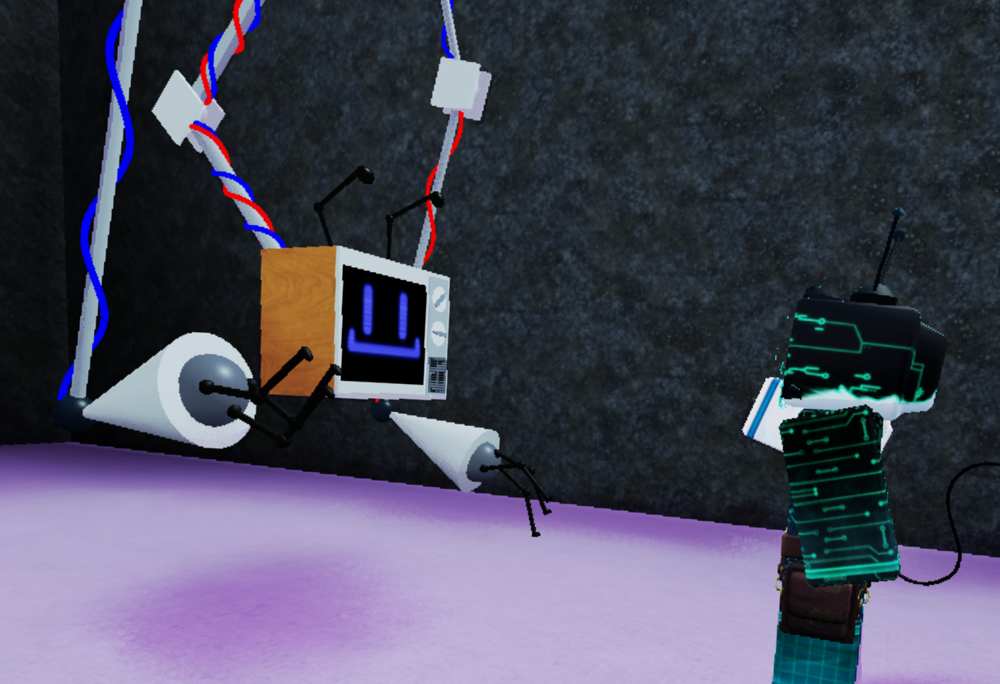

Val. A former war mech computer system, reprogrammed into a silly friend!
Often friendly to others unless they act mean towards her.
Something unique to VaI is that she hangs from the celling,
this allows her to hold someone off the ground, she usually does it to play with her friends or scaring meanies.
For whatever reason there is a name etched into her head,
"ZambertheZarrGuy" I asked her about it and she thinks that it was the person who made her. -Manatee